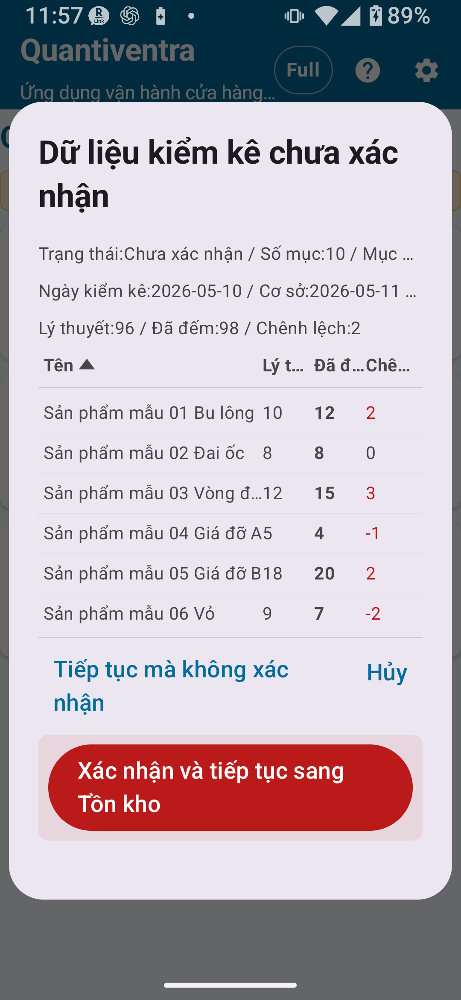

Tổng quan Gói đầy đủ
Gói kiểm kê đầy đủ loại bỏ tất cả giới hạn bản ghi và kích hoạt các cài đặt đầy đủ dùng chung — quy tắc mã, quy tắc vị trí, cài đặt camera, CSV mở rộng và nhiều hơn nữa.
Gói này phù hợp với việc quản lý nhiều sản phẩm và quy trình kiểm kê theo từng vị trí chi tiết.
- Loại bỏ giới hạn bản ghi danh mục, lịch sử kiểm kê và bản ghi xuất
- Cài đặt quy tắc mã chi tiết
- Cài đặt quy tắc vị trí chi tiết
- Cài đặt quét camera chi tiết
- Xuất CSV mở rộng
- Chỉnh sửa chi tiết
- Khóa xoay màn hình (tiếp tục khả dụng từ Gói tiêu chuẩn)

Khác biệt so với Gói tiêu chuẩn
| Tính năng / Cài đặt | Gói tiêu chuẩn | Gói đầy đủ |
|---|---|---|
| Bản ghi danh mục | Đến 300 | Không giới hạn |
| Bản ghi lịch sử kiểm kê | Đến 1.000 | Không giới hạn |
| Bản ghi xuất ra | Đến 300 | Không giới hạn |
| Cài đặt quy tắc mã chi tiết | ✗ | ○ |
| Cài đặt quy tắc vị trí chi tiết | ✗ | ○ |
| Cài đặt camera chi tiết | ✗ | ○ |
| Xuất CSV mở rộng | ✗ | ○ |
| Dùng vị trí chi tiết | ✗ (có thể đặt chế độ Chi tiết nhưng tính năng hạn chế) | ○ |
Vị trí chi tiết
Với Gói đầy đủ, tất cả vị trí đã đăng ký trong Danh mục vị trí đều khả dụng cho kiểm kê. Bạn có thể cấu hình số kệ, tầng, khu vực và các vị trí chi tiết khác ngoài kho và cửa hàng.
Cài đặt vị trí chi tiết
- Vào Cài đặt → Cài đặt kiểm kê và chọn chế độ Chi tiết.
- Vào Quản lý danh mục → Danh mục vị trí và đăng ký các vị trí cần thiết.
- Trong màn hình kiểm kê, nhấn vào trường vị trí sẽ hiển thị tất cả vị trí đã đăng ký.
Nhập/Xuất CSV mở rộng
Gói đầy đủ cho phép sử dụng các chức năng nhập/xuất CSV mở rộng cho kiểm kê.
Thông số nhập CSV kiểm kê (Gói đầy đủ)
| Loại CSV | Mục đích | Cột chính | Bắt buộc/Tùy chọn | Ghi chú | Khả dụng trong |
|---|---|---|---|---|---|
| CSV kiểm kê (2 cột) | Nhập danh mục kiểm kê cơ bản | Mã sản phẩm, Tên sản phẩm | 2 cột bắt buộc | Không có hàng tiêu đề; dữ liệu bắt đầu từ hàng 1 | Tất cả các gói |
| CSV kiểm kê (3 cột) | Nhập danh mục kiểm kê với tồn kho lý thuyết | Mã sản phẩm, Tên sản phẩm, Tồn kho lý thuyết | 3 cột bắt buộc | Không cần số đếm thực tế khi nhập (bắt đầu từ 0) | Tất cả các gói |
Xuất CSV kiểm kê (Gói đầy đủ)
- Tệp xuất có hàng tiêu đề theo ngôn ngữ ở dòng đầu tiên.
- CSV
stocktake_summarykhông bao gồm cột ngày, giờ hoặc vị trí. - Khi sử dụng xuất chi tiết theo vị trí, kệ, ngày hoặc từng dòng dữ liệu, hãy kiểm tra màn hình xuất và tệp CSV đã tạo trước khi sử dụng.
Lịch sử kiểm kê
Với Gói đầy đủ, giới hạn bản ghi lịch sử kiểm kê được bỏ. Dữ liệu kiểm kê cũ có thể lưu và xem lại trong thời gian dài.

Những gì bạn có thể thấy trong lịch sử
- Ngày/giờ lưu, mã sản phẩm, tên sản phẩm
- Số lượng đếm thực tế, vị trí
- Ghi chú (Gói đầy đủ)
- Trạng thái xác nhận (Đang chờ / Đã xác nhận)
Xác nhận kết quả kiểm kê thực tế
Trong Gói đầy đủ, có thao tác "Xác nhận kết quả kiểm kê thực tế" cho dữ liệu kiểm kê đã nhập. Khi xác nhận, kết quả kiểm kê sẽ được lưu thành bản ghi chính thức.
Quy trình từ kiểm kê đến xác nhận
Áp dụng kết quả kiểm kê vào tồn kho
Áp dụng kết quả kiểm kê vào Quản lý tồn kho điều chỉnh số lượng tồn kho để khớp với số đếm thực tế đã xác nhận. Sai lệch được ghi là các mục nhập lịch sử điều chỉnh.
Áp dụng vào tồn kho — Tổng quan
- Nhập dữ liệu kiểm kê và xác nhận kết quả kiểm kê thực tế.
- Chạy thao tác áp dụng kết quả kiểm kê vào tồn kho.
- Xem lại nội dung (chi tiết điều chỉnh) trên màn hình xác nhận.
- Xác nhận và thực hiện thao tác áp dụng.
- Kiểm tra chi tiết điều chỉnh trong lịch sử tồn kho.
Lưu ý quan trọng khi áp dụng vào tồn kho
Quy trình thực tế cho Gói đầy đủ
Quy trình kiểm kê hàng tháng
- Đầu tháng, nhập CSV kiểm kê để làm mới danh mục sản phẩm.
- Đặt Cài đặt kiểm kê sang chế độ Chi tiết và chuẩn bị vị trí theo kệ và khu vực.
- Tiến hành kiểm kê: quét mã vạch và nhập số đếm thực tế.
- Xem lại tất cả mục nhập trong lịch sử kiểm kê.
- Nếu mọi thứ chính xác, xác nhận kết quả kiểm kê thực tế.
- Áp dụng vào tồn kho (sau khi sao lưu).
- Xem mục nhập điều chỉnh kiểm kê trong lịch sử tồn kho và điều tra bất kỳ sai lệch nào.
- Xuất CSV kết quả kiểm kê để lưu trữ.
📌 Điểm chính của chương
- Gói đầy đủ loại bỏ tất cả giới hạn bản ghi và kích hoạt vị trí chi tiết, tính năng CSV mở rộng.
- Để dùng vị trí chi tiết, chuyển sang chế độ Chi tiết trong Cài đặt → Cài đặt kiểm kê.
- Quy trình Xác nhận → Áp dụng vào tồn kho thực hiện thay đổi dữ liệu quy mô lớn — hãy thao tác cẩn thận.
- Luôn sao lưu CSV trước khi áp dụng vào tồn kho.
🔍 Lưu ý trước khi sử dụng
- Sau khi xác nhận kết quả kiểm kê, hãy kiểm tra lịch sử kiểm kê và làm theo hướng dẫn trên màn hình nếu cần điều chỉnh dữ liệu.
- Sau khi áp dụng kết quả kiểm kê vào tồn kho, hãy kiểm tra lịch sử tồn kho và đối chiếu với bản sao lưu CSV.
- Khi xuất dữ liệu chi tiết theo vị trí, ngày hoặc từng dòng dữ liệu, hãy kiểm tra màn hình xuất và tệp CSV đã tạo trước khi sử dụng.
- Nếu cần sửa dữ liệu kiểm kê đã lưu, hãy thực hiện theo thao tác chỉnh sửa được cung cấp trong ứng dụng.